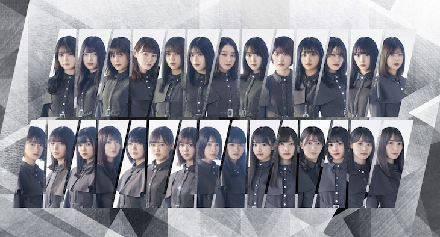

Sejarah
Keyakizaka46 adalah idol group Jepang sekaligus grup cabang pertama dari Nogizaka46. Nama grup ini (Keyaki) berasal dari pohon elm Jepang, tetapi bisa juga berasal dari Keyakizaka St. di Minato, Tokyo.
Anggota generasi pertama daro grup ini diumumkan pada 21 Agustus 2015, dengan singel debut "Silent Majority" dirilis pada 06 April 2016.
Pada 16 Juli 2020, tepatnya ketika konser "KEYAKIZAKA46 Live Online, but with YOU!", sang kapten Sugai Yuuka mengumumkan bahwa grup tersebut akan melakukan rebranding. Konser terakhir mereka, dengan nama "Keyakizaka46 THE LAST LIVE", diadakan pada 13 Oktober 2020.